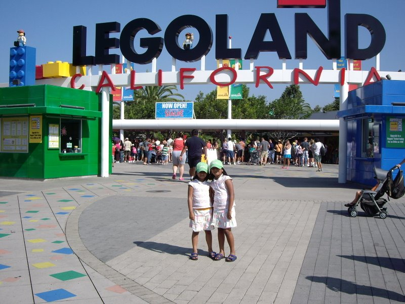
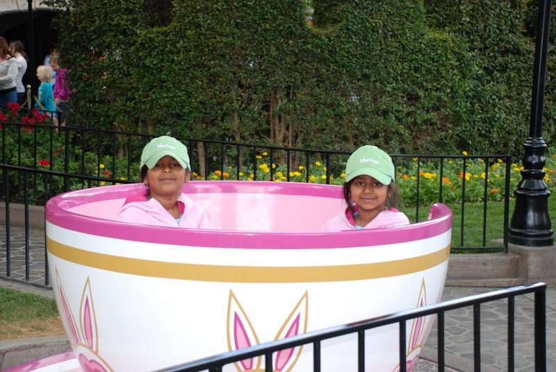
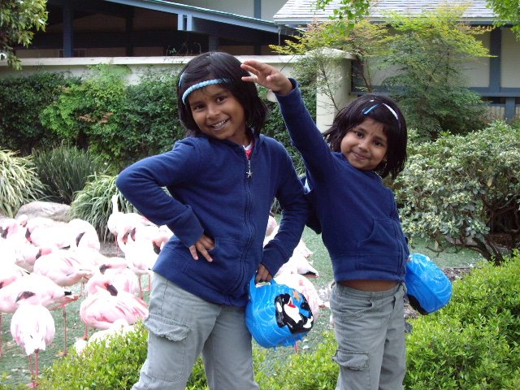
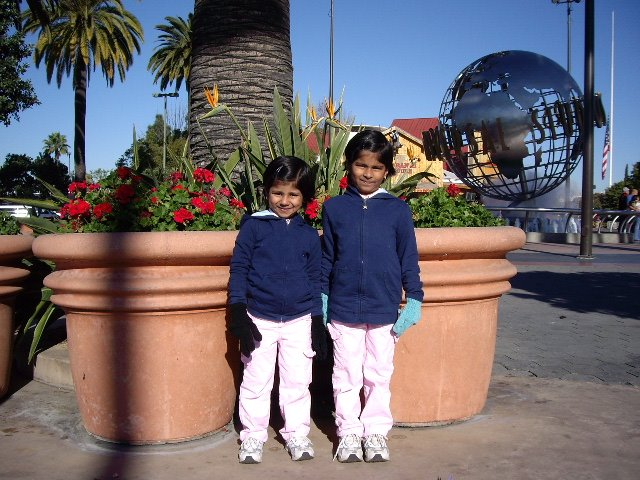

MY ENTERTAINMENTS
Different people have different ways to pass their time. These are just a few of mine that keeps my sanity in check.
Some of them include:
- Movies
- Television Shows
- Music
- Books
- Education and Career Path
- Socializing
- Outdoors
- Fitness
Books
This has been my past time ever since I learned how to read. I feel independant and strong when i feel the pages course through my fingertips. Its a me time i appreciate from this social world. These days due to lack of books, I rent some books online.
My all time favorites are:
Education and Career Path
You can call me wierd for considering this as an entertaiment. Sometimes I find joy when im doing homework or listening to videos. Thinking about the future and where i will reach both frightens and thrills me.
Some fields I feel interested in:
- Programming
- CMS Entrance Coaching
- Teaching
- Maths
- JEE Main Entrance Coaching
Socializing
This is my favourite form of pass time. Keeping in touch with everyone and maintaining a realationship gives me a confidence im never alone.
The different platforms I use are:
- Hangouts
- Microsoft Teams
- FaceTime
- Skype
Outdoors
I love travelling and visiting people. In fact my ambition is to travel the world and meet different people. Life is so short but this world is so large. This is a time I can take a break from the technological part of my life.
Some places I have travelled:
- Disney Land
- Niagara Falls
- Dubai
- Singapore
- Japan
- Delhi
- Universal Studios
- LA Zoo




Fitness
I love working out because exactly afer 5 hours a hormone is sent all over your body which makes you feel happy. I am an addict to this feeling. I always find 1 hour from my life to work out.
Some workout trainers I follow are:
- Chloe Ting

- Pamela Reif

Theresa Jacob
achu.jacob2002@gmail.com


Socializing
This is my favourite form of pass time. Keeping in touch with everyone and maintaining a realationship gives me a confidence im never alone.
The different platforms I use are: